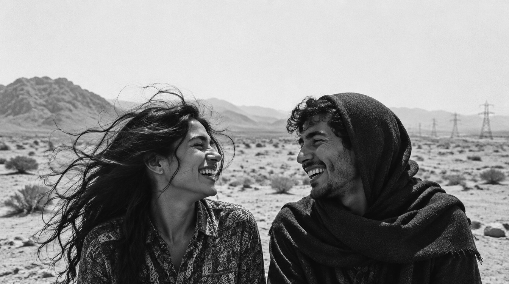
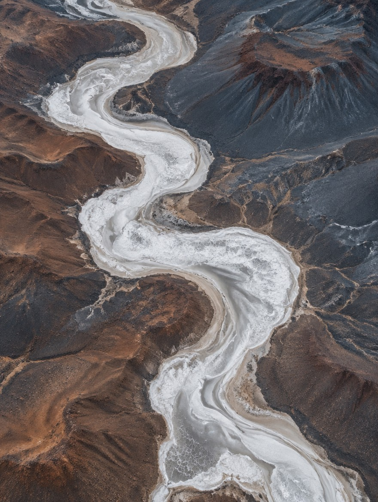
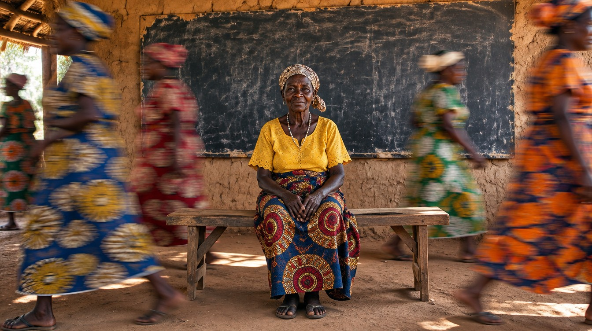
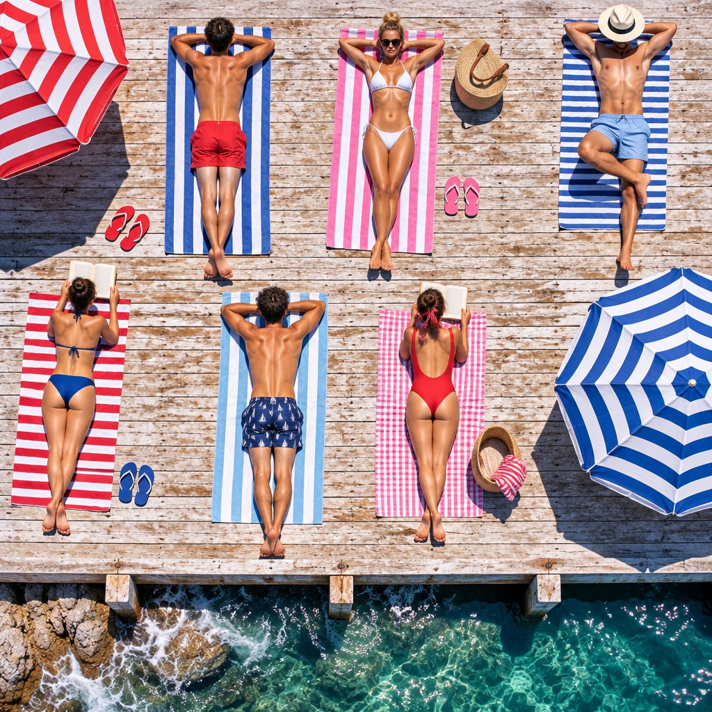
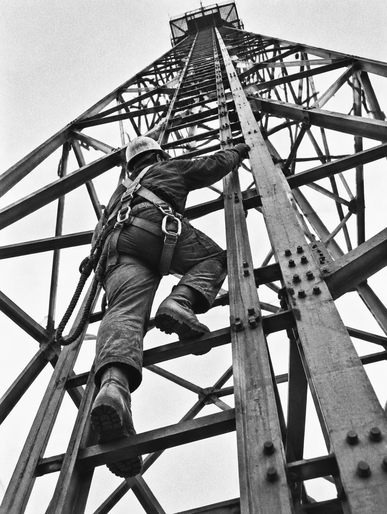
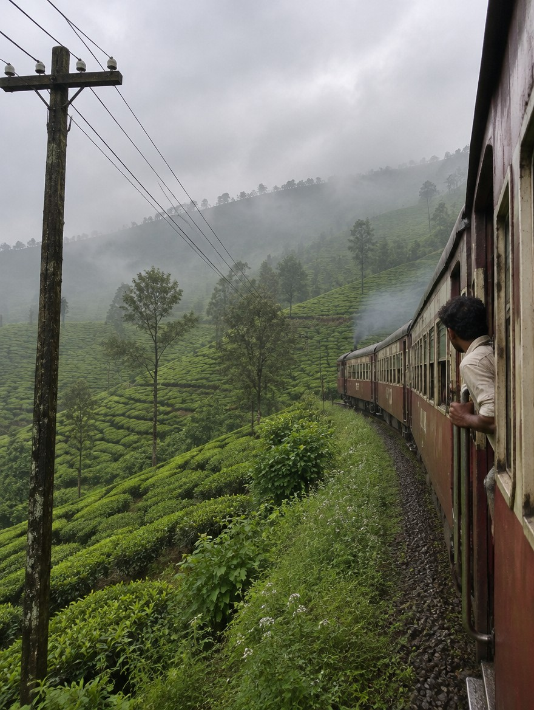
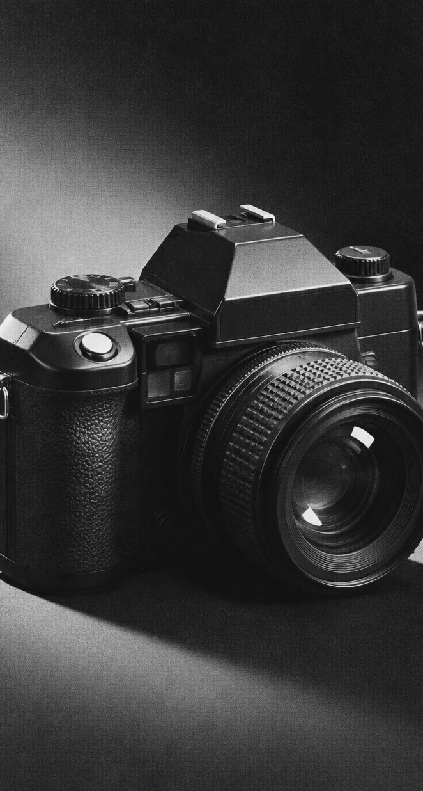
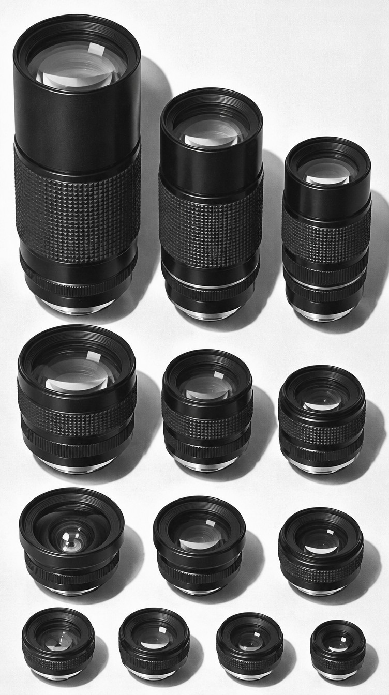
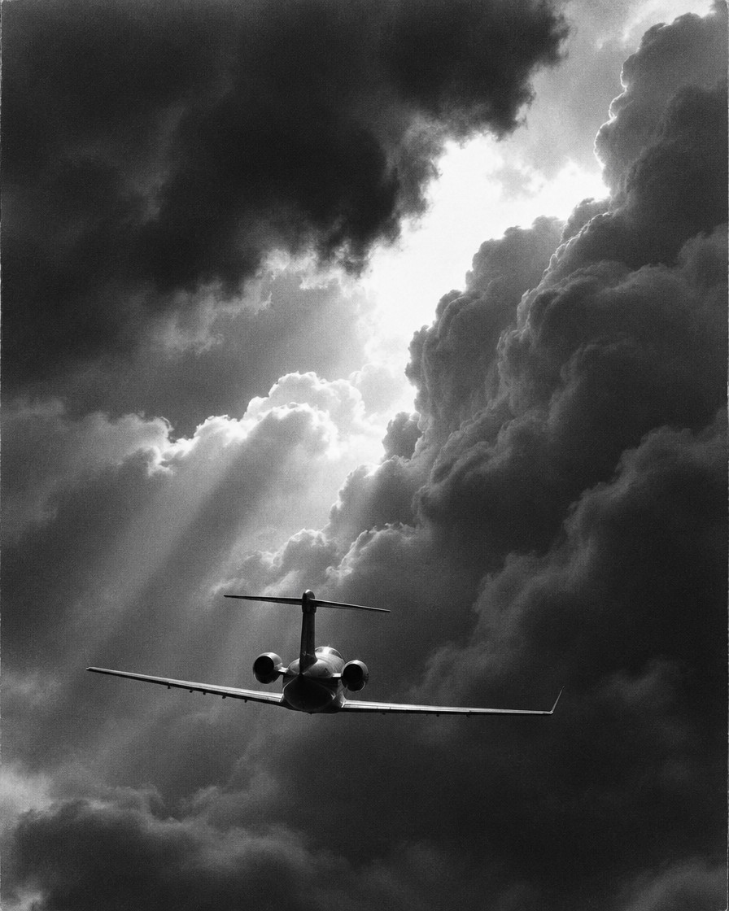
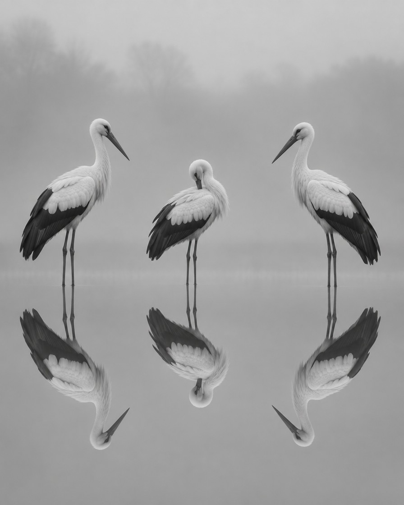

RF LENS
WORLD
Seeing the essence of a subject, Canon’s overwhelming technological prowess.





CANON’S
INNOVATION
THE EOS
R SYSTEM
In 2018, to offer new possibilities and value in image expression, we introduced the EOS R System and developed the EOS R camera and RF lenses to
achieve the comfort, speed, and high image quality of a mirrorless camera. With its outstanding lens design and advanced data processing capabilities
between the camera and lens, the EOS R System offers unprecedented image quality, expanded shooting range, and convenience.
In 2018, Canon unveiled the new RF lens mount. There wer e a number of different types of lens mount that came before it. What featu res did these lens mounts have, and how have Canon mounts envolves throughout the years?
- 1986


1987
1998
2001
R 시스템 라인업
The RF mount allows for a compact camera design
while maintaining the wide 54mm aperture of the EF mount.
This allows for greater flexibility in optical design, allowing for
closer placement of the CMOS sensor and the rear of the lens.
This feature detects shake not detected by the lens’ IS with high
precision, compensating for up to 5 stops of shake.
RF QUEST
/photo 2025 KyoseiRF 렌즈의 위대한 시선
최상의 렌즈 조합과 함께
놀라운 리워드를
만나보세요.
마치 게임속에서
퀘스트를 달성하는 것처럼
렌즈군을 모아보세요.
지금부터 원하는
RF렌즈들을 모으며
캐논이 퀘스트 보상을
드립니다.
RF LENS 미디어
카메라 기초 용어 설명과
촬영 노하우 등 유익한 정보를
캐논 TV에서 만나보세요.